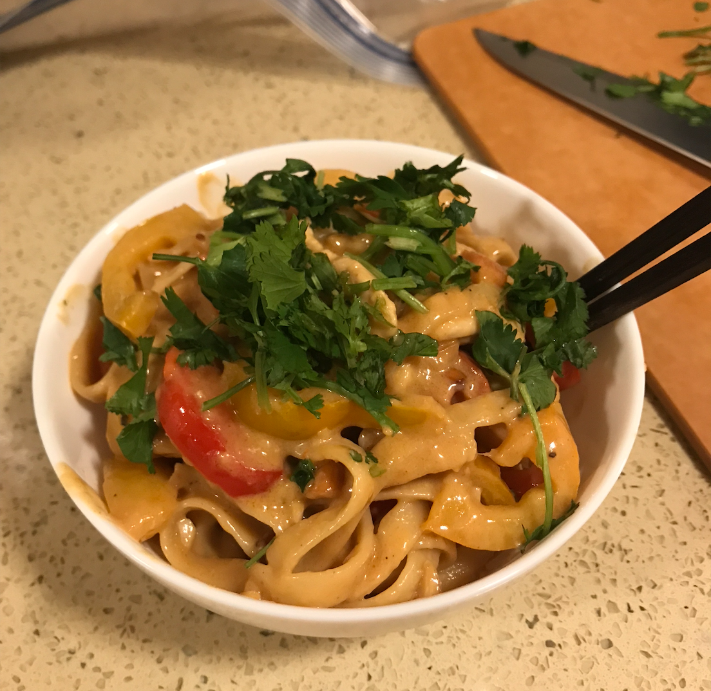

Peanut Noodles

Description
I found this peanut noodle recipe on tik tok (@mxriyum). It's realllly tasty, and pretty easy to make!
Ingredients
- 1 box (8oz?) pasta
- 3 thinly sliced chicken breasts
- sesame oil
- salt
- pepper
- 6 minced garlic cloves
- 2 thinly sliced bell peppers
- 1/2 cup soy sauce
- 1 cup pasta water
- 1 cup crunchy peanut butter
- 2 tbsp honey
- 2 tbsp vinegar
- 1 tbsp lime juice
- 1 tbsp ground ginger
- 2 tbsp sriracha
- 1/2 tbsp red pepper flakes
Steps
- Boil and salt water and begin cooking pasta
- Thinly slice chicken breasts
- Mince garlic and ginger
- Cook chicken breasts with garlic and sesame oil. Season with salt and black pepper.
- While chicken is cooking thinly slice bell peppers
- Remove chicken from heat and cook bell peppers in remaining oil
- Make sauce by combining ginger, soy sauce, peanut butter, honey, vinegar, lime juice, sriracha, pepper flakes, and pasta water
- Add chicken, pasta, and sauce back into pan. Mix to combine and let simmer together before serving!
- Garnish with cilantro if you feel extra